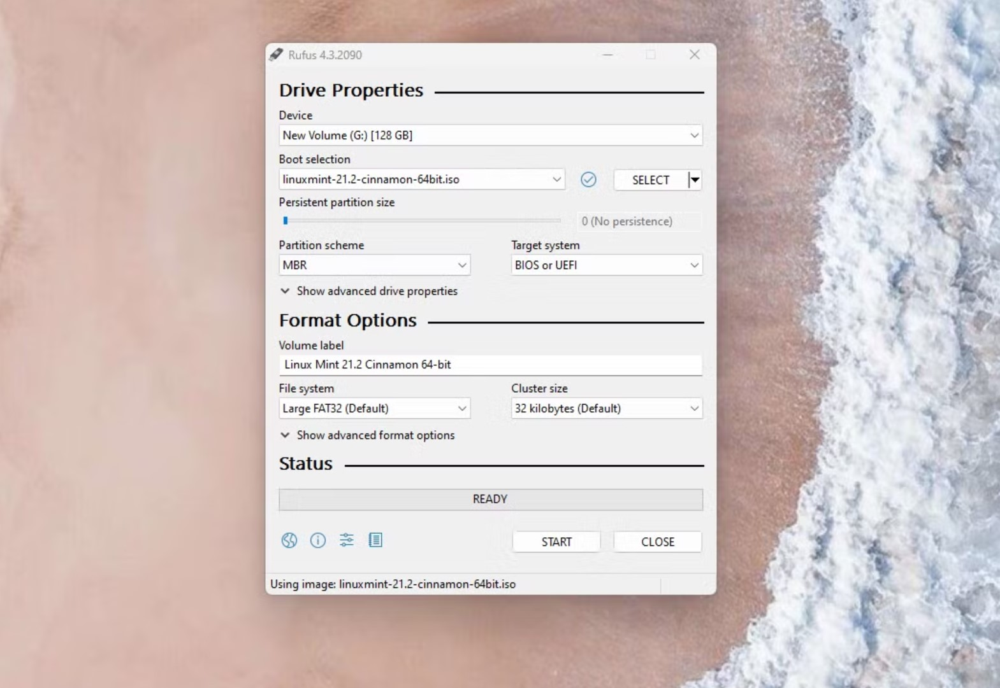

Recently, I decided to breathe new life into an old 120GB SSD I had lying around by turning it into a dedicated Linux boot drive. My main PC, a capable machine with a Ryzen 5 processor, 16GB of RAM, and an NVIDIA GTX 1060 6GB graphics card, seemed like the perfect candidate for this experiment. This post details my journey, the hurdles I encountered, and what I learned along the way.

Phase 1: Preparation & Creating the Bootable USB
The first step was choosing a distribution. After some research, I settled on Linux Mint (Cinnamon Edition). It's often recommended for users transitioning from Windows due to its user-friendly interface and solid performance out-of-the-box.
I downloaded the latest ISO from the official Linux Mint website and then used Rufus on my Windows system to create a bootable USB drive. During this process, Rufus presented a dialog box stating:
This essentially means the Linux Mint ISO needed specific bootloader files that weren't bundled with my version of Rufus. I clicked "Yes" to allow Rufus to download them, which is crucial for the USB to boot correctly.
Phase 2: The First Boot & Initial Hurdles
With the bootable USB ready, I restarted my PC, entered the BIOS/UEFI settings, and set the USB drive as the primary boot device. Success! The Linux Mint live session started up. However, my initial experience was, to put it mildly, sluggish. As I mentioned during the process, it felt like "operating on a potato." This is normal when running a full OS from a USB stick, as USB speeds are significantly slower than an internal SSD.
Once on the live desktop, I launched the installer. My first hiccup came at the "Installation type" screen. I initially hoped to use the "Install Linux Mint alongside..." option, but it wasn't detecting my 120GB SSD as a target; it only showed an external USB drive I had connected for other purposes.
Phase 3: The BIOS/UEFI Deep Dive - The AHCI Breakthrough
This is where the real troubleshooting began. I suspected a BIOS/UEFI setting was preventing the installer from seeing the SSD correctly. Since my system previously ran Windows 11, I knew there were a few settings to check:
- Secure Boot: I had already disabled Secure Boot, which is often recommended for Linux installations, especially when NVIDIA proprietary drivers might be involved later.
- SATA Controller Mode: This turned out to be the critical one. Many modern motherboards, especially those configured for Windows 10/11, default the SATA controller to "Intel RST" (Rapid Storage Technology) or "RAID" mode. Linux installers often struggle to detect drives in this mode. I navigated through my BIOS settings (under "Advanced" -> "SATA Configuration") and changed the mode from "Intel RST Premium" to "AHCI" (Advanced Host Controller Interface).
After changing to AHCI mode and saving the BIOS settings, I rebooted from the Linux Mint USB again. This time, when I chose the "Something else" option in the installer (for manual partitioning), my 120GB SSD was visible!
Phase 4: Installation & First Impressions on SSD
With the SSD detected, the rest of the installation was more straightforward using the "Something else" option. I deleted any existing partitions on the 120GB SSD to create unallocated space. Then, I created the necessary partitions for Linux Mint:
- An EFI System Partition (around 512MB) since my system uses UEFI.
-
A root partition (
/) using the Ext4 filesystem, taking up most of the remaining space. - A small swap partition (a few GBs).
I made sure the bootloader was set to install to the 120GB SSD (e.g.,
/dev/sda, not a specific partition). The installation
process took about 10-15 minutes. Once completed, I restarted the PC,
removed the USB drive when prompted, and... success!
Linux Mint booted up from the SSD, and the difference in performance was night and day compared to the live USB session. Everything was snappy, applications launched quickly, and the system felt incredibly responsive. The "potato" was gone, replaced by a sleek, fast operating system.
Conclusion: A Rewarding Learning Experience
This installation journey was a fantastic learning experience. The key takeaways for me were:
- The Rufus Syslinux prompt is normal and necessary for some ISOs.
- Live USB sessions are inherently slow; don't judge the OS performance by them.
- The SATA controller mode (AHCI vs. RST/RAID) is a critical BIOS setting for Linux compatibility, especially on systems that previously ran recent versions of Windows.
- The "Something else" installation option in Linux Mint provides the control needed for specific drive setups.
If you're considering installing Linux, especially on a dedicated drive, don't be discouraged by initial hurdles. A bit of research and careful attention to BIOS/UEFI settings can solve most detection issues. The end result – a fast, customized Linux system – is well worth the effort. My old 120GB SSD has found a new, speedy purpose!